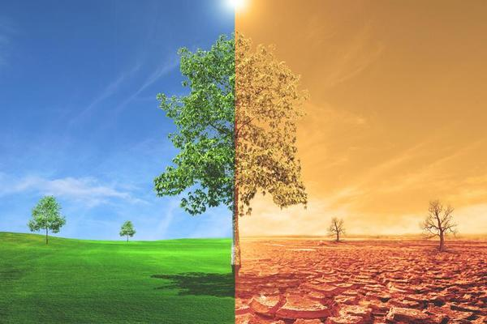

Mecanismos de adaptación de las plantas || ¿Qué podemos hacer para ayudar a las plantas?
-
Aunque no todas las especies logran adaptarse, las plantas desarrollan diferentes mecanismos de supervivencia:
- Alteración del ciclo biológico: floración más temprana o tardía para ajustarse al clima.
- Desplazamiento hacia latitudes más frías o mayores altitudes.
- Aumento de la tolerancia al estrés hídrico, reduciendo la transpiración para ahorrar agua.
- Producción de semillas más resistentes capaces de soportar condiciones extremas.
- Adaptaciones genéticas a lo largo de generaciones, aunque requieren tiempo y estabilidad.

- Promover la reforestación con especies autóctonas que resistan mejor las nuevas condiciones climáticas.
- Fomentar la agricultura sostenible: rotación de cultivos, riego eficiente y uso reducido de fertilizantes químicos.
- Detener la deforestación, proteger los ecosistemas naturales y restaurar áreas degradadas.
- Crear corredores ecológicos que permitan a las especies desplazarse y adaptarse a nuevas zonas.
- Apoyar la investigación en biotecnología para desarrollar variedades agrícolas más resistentes al calor, la sequía y las plagas.
- Educar a la sociedad sobre la importancia de conservar la vegetación como aliada contra el cambio climático, ya que absorbe CO2 y regula el clima.
Cómo afecta el cambio climático a las plantas
Tabla: Estadísticas e información sobre el problema en las plantas
| Factor Climático | Efectos en las Plantas | Ejemplos de Ecosistemas Afectados | Consecuencias Adicionales |
|---|---|---|---|
| Aumento de la Temperatura | Estrés térmico, alteración de la fenología, acortamiento de la estación de crecimiento | Cultivos como café, cacao, vid; bosques boreales | Migración de especies; algunas plantas brotan y florecen antes de lo habitual |
| Sequías Prolongadas | Reducción de agua, disminución de fotosíntesis y crecimiento, posible muerte | Bosques tropicales, ecosistemas mediterráneos | Mayor riesgo de incendios; aumento de desertificación; flora vulnerable a plagas y enfermedades |
| Aumento del CO₂ | Aceleración de fotosíntesis (fertilización por CO₂) en plantas C3 | Cultivos agrícolas diversos | Crecimiento más rápido, pero menor calidad nutricional |
| Fenómenos Climáticos Extremos | Daños físicos, inundaciones, erosión del suelo | Bosques costeros, cultivos de hortalizas, especies arbóreas altas | Alteración de hábitats, pérdida de cosechas, cambios en interacciones entre especies |